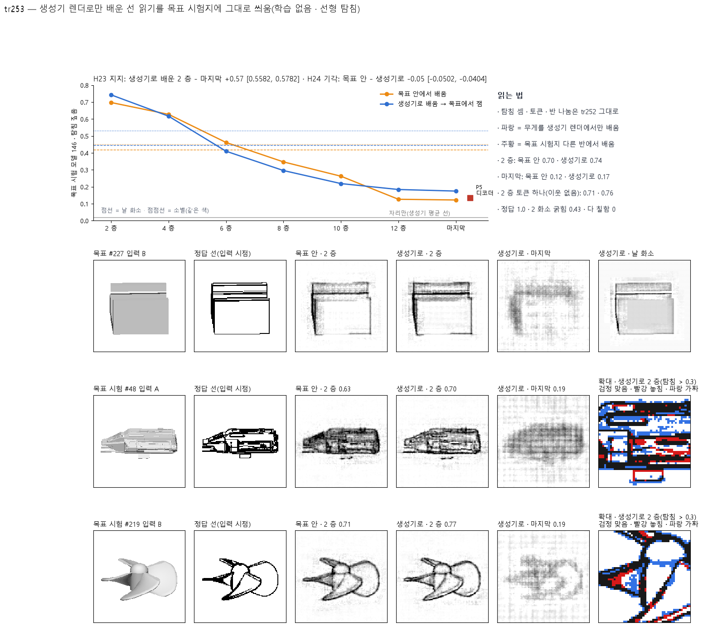

실험 m1_tr0253_h023_교차탐침
목표 G1.1a 한 장 → 3 면도 · G1.1 사진 → 3 면도(중간 표현) · G1 첫 제품 — 피규어 · 메카 사진 여러 장 + 치수 → 숨은선 3 면도 + 파츠별 CAD · G0 임의의 이미지 → CAD 코드 · 빌린 가정 4: 흰바탕 · 렌더화풍 · 정사영 · 시점앎 · 갚는 계획: 학습 없음 · 판정은 목표 시험지(원화CAD짝 292 렌더) · 탐침 무게는 생성기 렌더에서만 — 흰바탕 · 렌더화풍 · 시점앎은 실물 사진으로 그 뒤 · 정사영은 원근 렌더로 그 뒤 · 목표 시험지 값: 안 잼 (!)
생성기 렌더로만 배운 탐침도 목표 시험지에서 앞쪽 층의 선 자리를 꺼내나?
판정 · H23 지지(생성기로만 배운 2 층 탐침 0.74 − 마지막 0.17 = +0.57 [0.56, 0.58] · 날 화소 0.45 · 소벨 0.53 보다 높음 · 자리만 0.02) · H24 기각(같은 2 층에서 목표 안에서 배운 탐침 0.70 이 오히려 0.05 낮음) — 생성기 기본 도형으로 배운 앞쪽 층 선 읽기가 피규어 · 메카에 잃지 않고 건너감 · 메카 가운데 촘촘한 디테일 선은 놓침(128² 과녁 한계) · 다음 = tr254 여러 층 특징 학습(2 · 4 층 토큰을 디코더에 · 인코더 얼림 · P5 이어 배운 대조 · 도입 관문 D1)
| 가설 | 주장 | 결과 | 근거 |
|---|---|---|---|
| H23 | 생성기에서 배운 선 읽기도 피규어에 건너간다 — 생성기로 배운 탐침도 목표에서 앞쪽 층이 마지막 층보다 크게 높다 | 지지 | 목표 시험 모델 146 · 생성기 학습 반 150 부품으로 배운 탐침 짚음 2 층 0.743 · 4 층 0.617 · 6 층 0.410 · 8 층 0.296 · 10 층 0.219 · 12 층 0.184 · 마지막 0.175 · 2 층 토큰 하나(이웃 없음) 0.756 · 날 화소 0.446 · 소벨 0.532 · 자리만 0.021 · 생성기 검증 오차도 2 층이 가장 낮음(1.98 · 마지막 3.40) |
| H24 | 생성기에서 배운 선 읽기는 피규어로 넘어가며 크게 줄어든다 — 앞쪽 층에서도 목표 안에서 배운 탐침보다 크게 낮다 | 기각 | 같은 람다 범위(1 ~ 10⁶) · 목표 안에서 배운 탐침 2 층 0.698 · 4 층 0.628 · 6 층 0.462 · 8 층 0.347 · 10 층 0.263 · 12 층 0.127 · 마지막 0.122 · 2 층 하나 0.709 · 날 화소 0.419 · 소벨 0.452 · 같은 차(목표 안 − 생성기로) 마지막 -0.053 · 2 층 하나 -0.047 · 날 화소 -0.027 · 소벨 -0.080 · 6 · 8 · 10 층은 목표 안이 높음(+0.05) |
분석
한 줄로
물음: 생성기 렌더로만 배운 탐침도 목표 시험지에서 앞쪽 층의 선 자리를 꺼내나?
답: 꺼낸다(H23 지지). 생성기로만 배운 2 층 탐침이 목표에서 0.74를 짚었고, 마지막 층은 0.17이었다. 목표 시험지 안에서 배운 탐침(0.70)보다 오히려 조금 높아서, 건너가며 잃는다는 H24는 기각이다. 다만 메카 가운데의 촘촘한 디테일 선은 놓쳤다.
왜 이 실험을 했나
tr252에서 선 자리가 얼린 인코더의 앞쪽 층에 남아 있다는 걸 봤다. 그런데 그 탐침은 목표 시험지 절반으로 배운 것이다. 우리 망은 생성기의 기본 도형 렌더로만 배운다(데이터는 건드리지 않는다). 그래서 생성기에서 배운 선 읽기가 피규어에도 통하는지를, 학습(tr254)에 앞서 CPU로 먼저 가렸다.
바꾼 것 하나
탐침의 무게를 배우는 곳만 바꿨다. 생성기 학습 반 150 부품에서 배우고, 목표 시험 모델 146에서는 재기만 했다. 토큰, 탐침 셈, 반 나눔은 tr252와 같다. λ 범위는 10⁶까지 넓혔고, 목표 안 탐침도 같은 범위로 다시 쟀다. 층은 생성기 쪽 검증 오차로 골랐다.
결과

| 결과 | 판정선 | 판정 | |
|---|---|---|---|
| H23 생성기로 배운 (2 층 − 마지막 층) | +0.57 [0.56, 0.58] | +0.10 넘게 | 지지 |
| H24 2 층 (목표 안 − 생성기로) | −0.05 [−0.05, −0.04] | +0.10 넘게면 지지 · 0.03 아래면 기각 | 기각 |
짚음은 tr249에서 자 검사를 통과한 자다. 정답은 1.0, 2 화소 굵힘은 0.43, 다 칠하면 0이다.
왜 이렇게 나왔나
확인한 것
- 생성기로 배운 층별 짚음: 2 층 0.74 → 4 층 0.62 → 6 층 0.41 → 8 층 0.30 → 마지막 0.17. 날 화소 0.45, 소벨 0.53보다 2 층이 높다.
- 이웃 없이 2 층 토큰 하나로도 0.76이 나온다. 국소로 읽는 법이 건너간다.
- 자리만 준 대조는 0.02다. 그림 내용이 만든 값이다.
- 6 ~ 10 층은 목표 안 탐침이 0.05쯤 높다. 깊은 층일수록 덜 건너간다.
- 메카 #48은 0.70, 프로펠러 #219는 0.77이다. 확대 혼동 그림에서는 큰 윤곽과 모서리가 맞고, 메카 가운데 촘촘한 선에 놓침이 몰렸다.
짐작 (아직 확인 안 함)
- 생성기 선은 깔끔해서 탐침이 또렷한 모서리를 배운다. 목표의 128² 과녁은 디테일이 이미 뭉개져 있어, 목표 안 탐침은 흐리게 배운다.
- 깊은 층은 「무엇인가」에 따라 달라지는 몫이 커서 모양이 바뀌면 덜 건너간다.
한계
- 선형 탐침이고, 입력 시점의 보이는 선만 잰다. 시점 옮기기와 숨은선은 들어 있지 않다.
- 128² 과녁은 디테일 선을 이미 뭉갠다. 디테일 선이 건너가는지는 이 실험으로 모른다.
- λ를 넓히자 목표 안 12 층과 마지막 층은 10⁵를 골라 0.13 · 0.12로 내려갔다(tr252는 0.22 · 0.21). λ는 평균 제곱 오차로 고르고 판정은 짚음으로 하기 때문이다. 판정에 쓴 2 층은 양쪽 모두 10⁴다.
배운 것과 다음
생성기 기본 도형으로 배운 앞쪽 층 선 읽기는 피규어에도 잃지 않고 건너간다. 여러 층 특징 학습으로 갈 근거가 섰다.
- tr254 — 2 · 4 층 토큰을 디코더에 함께 넣는다(인코더는 얼린 채). P5를 같은 스텝만큼 이어 배운 대조와 견준다(도입 관문 D1).
- 판정은 목표 시험지 짚음, 굵기 벌점 자, 맥락 없는 그림 판정에 생성기 시험 지킴을 더한다.
- 디테일 선은 더 높은 해상도 과녁이 있어야 잴 수 있다. tr254 뒤에 따로 다룬다.
실험 기록
- 카드 · 교차253.py(흐름 · 탐침 · 재기 · 지도더 · 그림) · 잼.json · 흐름.png · 결과.png · 원본 out/설명/캐드부품/모델253